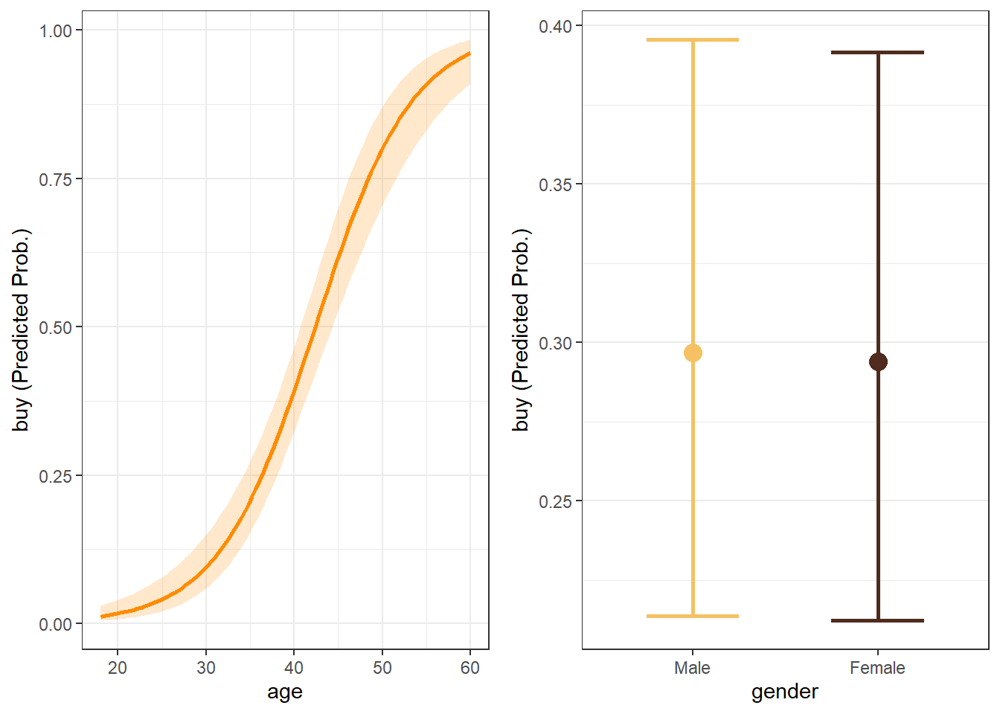

Chapter 4 Logistic Regression (Binary)
Sources for this chapter:
- R for Marketing Research ad Analytics, Second Edition (2019). Chris Chapman and Elea McDonnell Feit
- ggplot2: https://ggplot2.tidyverse.org/
Data for this chapter:
The directmktg.rdata is used. Load it now.
# You may need to change the directory load("Data/directmktg.rdata")
4.1 Introduction
Base R is typically sufficient for performing the basics of logisitic regression, but to get some of the outputs required, I have created some user defined functions. You should download these functions and save them in your working directory.
- or_table.R produces Odds Ratio Coefficients
- logreg_cm.R produces the Classification Matrix
- logreg_roc.R produces the ROC Curves
- gainlift.R produces Gain/Lift tables and charts
- logreg_cut.R produces the Sensitivity/Specificity Plot
Once saved in your working directory, it is good practice to source them.
source("or_table.R")
source("logreg_cm.R")
source("logreg_roc.R")
source("gainlift.R")
source("logreg_cut.R")4.2 The glm() Function
glmstands for Generalized Linear Model, and this function can be used with a variety of dependent variables by specifying differentfamily="FAMILY"options *lm(dv ~ iv1 + iv2, data)is the same as
`glm(dv ~ iv1 + iv2, data, family=“gaussian”)- Usage:
glm(formula, data, family)
4.3 Logistic Regression using glm()
Binary logistic regression is performed using the
glm()function when thefamily="binomial"is specified.Usage:
glm(formula, data, family="binonmial")family="binomial"tells R to use logistic regression on a binary dependent variable
If
glm(formula, data, family="binomial")is run by itself, R only outputs the **Logit formulation* coefficients (and some other measures)glm(buy ~ age + gender, directmktg, family="binomial")Call: glm(formula = buy ~ age + gender, family = "binomial", data = directmktg) Coefficients: (Intercept) age genderFemale -8.02069 0.18954 -0.09468 Degrees of Freedom: 399 Total (i.e. Null); 397 Residual Null Deviance: 521.6 Residual Deviance: 336.1 AIC: 342.1Table 4.1: Logit Coefficients from
glm()callHowever, if the results of the
glm()call are assigned to an object, the Base Rsummary()function can be used to get much more detailed output, but requires manual calculation of McFadden’s Pseudo-\(R^2\)prelim <- glm(buy ~ age + gender, directmktg, family="binomial") summary(prelim)Call: glm(formula = buy ~ age + gender, family = "binomial", data = directmktg) Deviance Residuals: Min 1Q Median 3Q Max -2.4952 -0.6679 -0.2844 0.5748 2.4684 Coefficients: Estimate Std. Error z value Pr(>|z|) (Intercept) -8.02069 0.78700 -10.191 <2e-16 *** age 0.18954 0.01926 9.842 <2e-16 *** genderFemale -0.09468 0.27354 -0.346 0.729 --- Signif. codes: 0 '***' 0.001 '**' 0.01 '*' 0.05 '.' 0.1 ' ' 1 (Dispersion parameter for binomial family taken to be 1) Null deviance: 521.57 on 399 degrees of freedom Residual deviance: 336.14 on 397 degrees of freedom AIC: 342.14 Number of Fisher Scoring iterations: 5# Manually calculate McFadden's Pseudo R-sq Mrsq <- 1-prelim$deviance/prelim$null.deviance cat("McFadden's Pseudo-Rsquared = ", Mrsq)McFadden's Pseudo-Rsquared = 0.3555239Table 4.2: Summary results from
glm()callFor “nicer” looking results, the package
jtoolscan be used- NOTE:
jtoolsis not available in BGSU’s Virtual Computing Lab
library(jtools) summ(prelim, # Saved object from before digits=4, # How many digits to display in each column model.info = FALSE) # Suppress extraneous informationχ²(2)
185.4317
Pseudo-R² (Cragg-Uhler)
0.5092
Pseudo-R² (McFadden)
0.3555
AIC
342.1413
BIC
354.1157
Est.
S.E.
z val.
p
(Intercept)
-8.0207
0.7870
-10.1915
0.0000
age
0.1895
0.0193
9.8422
0.0000
genderFemale
-0.0947
0.2735
-0.3461
0.7293
Standard errors: MLE
Table 4.3: Summary results from
glm()usingjtoolspackage- NOTE:
To get the Odds Ratio coefficients, use the user defined function
or_table.RUsage:
or_table(MODEL, DIGITS, CONF)MODELis the name of the object with results of theglm()callDIGITSis the number of digits to round the values to in the tableCONFis the confidence interval level (e.g., 95 = 95%)
flextable( # Wrapping it with 'flextable' for nicer output or_table(prelim, # Saved logistic regression model from above 4, # Number of digits to round output to 95)) # Level of confidenceParameter
OR Est
p
2.5%
97.5%
(Intercept)
0.0003
0.0000
0.0001
0.0015
age
1.2087
0.0000
1.1639
1.2552
genderFemale
0.9097
0.7293
0.5322
1.5550
Table 4.4: Odds Ratio Coefficients
4.4 Estimate with Training Sample Only
Generally, it is good practice to use a training sample and a testing/holdout sample to see how well the model performs “out of sample”. To do this, the data must be split into two groups: train and test
4.4.1 Creating train and test Samples
- While this can be done in a number of ways, the package
carethas a very useful function that attempts to balance the percent of “positive” cases in both samples, while still creating random samples - After running this procedure, two new data frames will be created
- One containing the training data,
train - One containing the testing/holdout data,
test
# Use 'caret' package to create training and test/holdout samples # This will create two separate dataframes: train and test library(caret) # Load the 'caret package' # Start by setting a random number seed so that the same samples # will be created each time set.seed(4320) # Create a dataframe of row numbers that should be in the 'train' sample inTrain <- createDataPartition(y=directmktg$buy, # Outcome variable p=.75, # Percent of sample to be in 'train' list=FALSE) # Put result in matrix # Select only rows from data that are in 'inTrain'; assign to 'train' train <- directmktg[inTrain,] # Select only rows from data that not in 'inTrain'; assign to 'test' test <- directmktg[-inTrain,] - One containing the training data,
4.4.2 Run Model with only Training Sample
Once completed, run the model on the training sample only
model <- glm(buy ~ age + gender, train, family="binomial") summ(model, # 'jtools' results; use 'summary' for Base R 4, model.info=FALSE)χ²(2)
130.57
Pseudo-R² (Cragg-Uhler)
0.48
Pseudo-R² (McFadden)
0.33
AIC
268.37
BIC
279.49
Est.
S.E.
z val.
p
(Intercept)
-7.71
0.87
-8.81
0.00
age
0.18
0.02
8.52
0.00
genderFemale
-0.01
0.31
-0.04
0.97
Standard errors: MLE; Continuous predictors are mean-centered and scaled by 1 s.d.
flextable(or_table(model))Parameter
OR Est
p
2.5%
97.5%
(Intercept)
0.0004
0.000
0.0001
0.0025
age
1.1996
0.000
1.1505
1.2509
genderFemale
0.9873
0.967
0.5399
1.8056
Table 4.5: Logistic Regression Results for Training Sample
4.5 Margin Plots
Margin plots are done in much the same way as with linear regression margin plots
# Load 'effects' package library(effects) # Create data frame with values to be plotted with 'age' as focal age.pred <- data.frame(predictorEffect("age", model)) # Create plot and assign to 'p1' p1 <- age.pred %>% ggplot(aes(x=age, y=fit)) + geom_line(size=1) + # Draw predicted line geom_ribbon(aes(ymin=lower, # Draws the confidence interval bands ymax=upper), alpha=0.2) + # Sets transparency level labs(x="Age", y="Pr(Buy)") + scale_y_continuous(limits=c(0,1)) # Create data frame with values to be plotted with 'gender' as focal g.pred <- data.frame(predictorEffect("gender", model)) # Create plot and assign to 'p2' p2 <- g.pred %>% ggplot(aes(x=gender, y=fit, group=1)) + # Need to draw line between points geom_point(size=4) + geom_line(color="orange") + geom_errorbar(aes(ymin=lower, ymax=upper), width=.5) + labs(x="Gender", y="Pr(Buy)") + scale_y_continuous(limits=c(0,1)) #Use 'cowplot' to put into single plot plot_grid(p1,p2)Figure 4.1: Margin plots for variables in model
4.6 Classification Matrix
To get the Classification Matrix, use the user defined function
logreg_cm.RUsage:
logreg_cm(MOD, DATA, "POS", CUTOFF=)MODis the name of the object with results of theglm()callDATAis the data set for which the Classification Matrix should be produced (i.e., original, training, or testing)"POS"is the level of the factor variable that is the SUCCESS levelCUTOFF=is the cutoff threshold; default is 0.5
This function requires the package
caret, which should already be loaded from the splitting of the data# Classification Matrix for training sample logreg_cm(model, # Name of the results object train, # Use training sample "Yes") # Level of 'buy' that represents success/trueConfusion Matrix and Statistics Reference Prediction No Yes No 179 37 Yes 14 71 Accuracy : 0.8306 95% CI : (0.7833, 0.8712) No Information Rate : 0.6412 P-Value [Acc > NIR] : 3.179e-13 Kappa : 0.6136 Mcnemar's Test P-Value : 0.002066 Sensitivity : 0.6574 Specificity : 0.9275 Pos Pred Value : 0.8353 Neg Pred Value : 0.8287 Prevalence : 0.3588 Detection Rate : 0.2359 Detection Prevalence : 0.2824 Balanced Accuracy : 0.7924 'Positive' Class : Yes PCC = 53.99%Table 4.6: Classification Matrix for Training Sample
4.7 ROC Curve
To get the ROC curve, use the user defined function
logreg_roc.RUsage:
logreg_roc(MOD, DATA)MODis the name of the object with results of theglm()callDATAis the data set for which the ROC should be produced (i.e., original, training, or testing)
This function requires the package
pROC, which needs to be loaded# Load 'pROC' package library(pROC) # ROC Curve for the training sample logreg_roc(model, # Name of the results object train) # Use training sample
Figure 4.2: ROC Curve for Training Sample
4.8 Gain/Lift Charts and Tables
To get the Gain/Lift charts and tables , use the user defined function
gainlift.RUsage:
OBJ.NAME <- gainlift(MOD, TRAIN, TEST, "POS")OBJ.NAMEis the name of the object to assign the results toMODis the name of the object with results of theglm()callTRAINis the name of the data frame containing the training sampleTESTis the name of the data frame containing the test/holdout sample"POS"is the level of the factor variable that is the SUCCESS level
This function requires the
ggplot2,dplyr, andtidyrpackages, which need to be loaded firstThis user defined function returns a list of four objects
- To use, assign the result to an object name, and then call one of the four objects returned from the function
# Load necessary packages (if not already loaded) library(ggplot2) library(dplyr) library(tidyr) # Call the function and assign to object named 'glresults' glresults <- gainlift(model, # Name of the glm results object train, # Name of the training data frame test, # Name of the testing data frame "Yes") # Level that represents success/trueOBJ.NAME$gaintablereturns the Gain table
glresults$gaintable# A tibble: 20 × 3 `% Sample` Holdout Training <dbl> <dbl> <dbl> 1 0.05 0.114 0.130 2 0.1 0.229 0.269 3 0.15 0.371 0.370 4 0.2 0.457 0.5 5 0.25 0.6 0.602 6 0.3 0.714 0.667 7 0.35 0.8 0.704 8 0.4 0.8 0.731 9 0.45 0.829 0.769 10 0.5 0.886 0.815 11 0.55 0.914 0.861 12 0.6 0.943 0.870 13 0.65 0.971 0.889 14 0.7 1 0.944 15 0.75 1 0.954 16 0.8 1 0.972 17 0.85 1 0.991 18 0.9 1 1 19 0.95 1 1 20 1 1 1Table 4.7: Gain Table
OBJ.NAME$gainplotreturns the Gain plot
glresults$gainplotFigure 4.3: Gain Plot
OBJ.NAME$lifttablereturns the Lift table
glresults$lifttable# A tibble: 20 × 3 `% Sample` Holdout Training <dbl> <dbl> <dbl> 1 0.05 2.83 2.60 2 0.1 2.51 2.69 3 0.15 2.63 2.48 4 0.2 2.38 2.51 5 0.25 2.48 2.42 6 0.3 2.44 2.23 7 0.35 2.33 2.02 8 0.4 2.03 1.83 9 0.45 1.86 1.71 10 0.5 1.79 1.64 11 0.55 1.68 1.57 12 0.6 1.58 1.46 13 0.65 1.50 1.37 14 0.7 1.43 1.35 15 0.75 1.34 1.28 16 0.8 1.25 1.22 17 0.85 1.18 1.17 18 0.9 1.11 1.11 19 0.95 1.05 1.06 20 1 1 1Table 4.8: Lift Table
OBJ.NAME$liftplotreturns the Lift plot
glresults$liftplotFigure 4.4: Lift Plot
4.9 Sensitivity/Specificity Plot
To get the Sensitivity/Specificity plot, use the user defined function
logreg_cut.RUsage:
logreg_cut.r(MOD, DATA, "POS")MODis the name of the object with results of theglm()callDATAis the data set for which the plot should be produced (i.e., original, training, or testing)"POS"is the level of the factor variable that is the SUCCESS level
This function requires the
ggplot2package, which needs to be loaded first# Load necessary packages library(ggplot2) # Sensitivity/Specificity Plot for Training Sample logreg_cut(model, # Name of the results object train, # Use training sample "Yes") # Level of 'buy' that represents success/true
Figure 4.5: Sensitivity/Specificity Plot for Training Sample